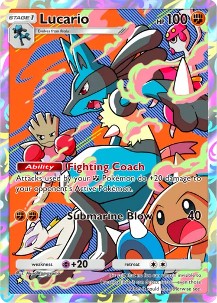

Sweekrit Bhatnagar
Data science, ML and robotics at UC San Diego.

Lucario
·
Fighting / Steel
Projects
Publications
Natural Product ML
ChemRxiv · 2023
→
SEP & COVID-19
JEI · 2023
→
Presentations
Microbiome & NAFLD
SCCUR 2026 · poster
→
Natural Product ML
SCCUR 2023 · oral
→
FDA Drug PK
SCCUR 2023 · poster
→
DNA Enzymes
SCCUR 2023 · poster
→
Links
GitHub
↗
LinkedIn
↗
Email
↗
Close